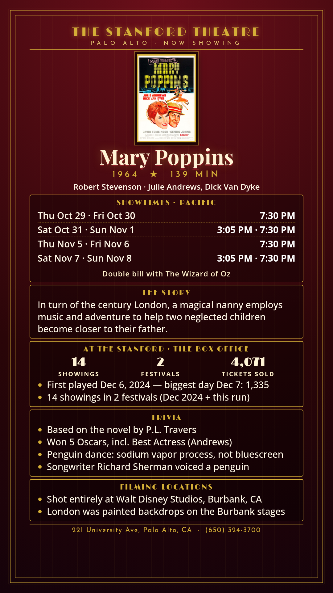

Mary Poppins
Robert Stevenson · Julie Andrews, Dick Van Dyke
In turn of the century London, a magical nanny employs music and adventure to help two neglected children become closer to their father.
Schedule
Mary Poppins / The Wizard of Oz · October 29 - November 8, 2026
October 29 - November 1
Thursday, October 29
Friday, October 30
Trivia
- Based on the novel by P.L. Travers
- Won 5 Oscars, incl. Best Actress (Andrews)
- Penguin dance: sodium vapor process, not bluescreen
- Songwriter Richard Sherman voiced a penguin
Filming Locations
- Shot entirely at Walt Disney Studios, Burbank, CA
- London was painted backdrops on the Burbank stages
Previous Showings
14 Showings • 2 Festivals
4,071 tickets sold
All runs on record (2):
- December 6 - 15, 2024 · 4,071 tickets · December 2024
- October 29 - November 8, 2026 · 0 tickets · w/ The Wizard of Oz
More

